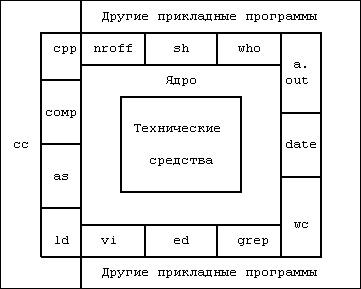

На Рисунке 1.1 изображена архитектура верхнего уровня системы UNIX. Технические средства, показанные в центре диаграммы, выполняют функции, обеспечивающие функционирование операционной системы и перечисленные в разделе 1.5. Операционная система взаимодействует с аппаратурой непосредственно (***), обеспечивая обслуживание программ и их независимость от деталей аппаратной конфигурации. Если представить систему состоящей из пластов, в ней можно выделить системное ядро, изолированное от пользовательских

Рисунок 1.1. Архитектура системы UNIX
программ. Поскольку программы не зависят от аппаратуры, их легко переносить из одной системы UNIX в другую, функционирующую на другом комплексе технических средств, если только в этих программах не подразумевается работа с конкретным оборудованием. Например, программы, рассчитанные на определенный размер машинного слова, гораздо труднее переводить на другие машины по сравнению с программами, не требующими подобных установлений.
Программы, подобные командному процессору shell и редакторам (ed и vi) и показанные на внешнем по отношению к ядру слое, взаимодействуют с ядром при помощи хорошо определенного набора обращений к операционной системе. Обращения к операционной системе понуждают ядро к выполнению различных операций, которых требует вызывающая программа, и обеспечивают обмен данными между ядром и программой. Некоторые из программ, приведенных на рисунке, в стандартных конфигурациях системы известны как команды, однако на одном уровне с ними могут располагаться и доступные пользователю программы, такие как программа a.out, стандартное имя для исполняемого файла, созданного компилятором с языка Си. Другие прикладные программы располагаются выше указанных программ, на верхнем уровне, как это показано на рисунке. Например, стандартный компилятор с языка Си, cc, располагается на самом внешнем слое: он вызывает препроцессор для Си, ассемблер и загрузчик (компоновщик), т.е. отдельные программы предыдущего уровня. Хотя на рисунке приведена двухуровневая иерархия прикладных программ, пользователь может расширить иерархическую структуру на столько уровней, сколько необходимо. В самом деле, стиль программирования, принятый в системе UNIX, допускает разработку комбинации программ, выполняющих одну и ту же, общую задачу.
Многие прикладные подсистемы и программы, составляющие верхний уровень системы, такие как командный процессор shell, редакторы, SCCS (система обработки исходных текстов программ) и пакеты программ подготовки документации, постепенно становятся синонимом понятия "система UNIX". Однако все они пользуются услугами программ нижних уровней и в конечном счете ядра с помощью набора обращений к операционной системе. В версии V принято 64 типа обращений к операционной системе, из которых немногим меньше половины используются часто. Они имеют несложные параметры, что облегчает их использование, предоставляя при этом большие возможности пользователю. Набор обращений к операционной системе вместе с реализующими их внутренними алгоритмами составляют "тело" ядра, в связи с чем рассмотрение операционной системы UNIX в этой книге сводится к подробному изучению и анализу обращений к системе и их взаимодействия между собой. Короче говоря, ядро реализует функции, на которых основывается выполнение всех прикладных программ в системе UNIX, и им же определяются эти функции. В книге часто употребляются термины "система UNIX", "ядро" или "система", однако при этом имеется ввиду ядро операционной системы UNIX, что и должно вытекать из контекста.
(***) В некоторых реализациях системы UNIX операционная система взаимодействует с собственной операционной системой, которая, в свою очередь, взаимодействует с аппаратурой и выполняет необходимые функции по обслуживанию системы. В таких реализациях допускается инсталляция других операционных систем с загрузкой под их управлением прикладных программ параллельно с системой UNIX. Классическим примером подобной реализации явилась система MERT [Lycklama 78a]. Более новым примером могут служить реализации для компьютеров серии IBM 370 [Felton 84] и UNIVAC 1100 [Bodenstab 84].
Предыдущая глава || Оглавление || Следующая глава
{kind=link}